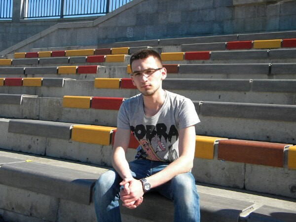

Durzhynskyi Dmytro
Задавайте
вопросы по электронной почте
- Date of birth: 08.11.1995
- Address: Vinnitsa, Ukraine
- Phone (viber, telegram): +38(063)2730563
- Skype: tilck95
- e-mail: tilck081195@gmail.com

WORK EXPERIENCE:
- November 2017 – May 2018: Front-end Developer at the firm “Dedey Digital”
- 17.01.17 – June 2017: PHP lecturer, Computer academy «The STEP»
- March 2017 – June 2017: РНР lecturer at the VNTU
MY PROJECTS:
- GitHub: github.com/Tilck
- nova-oselia.com
- Front-end: gs.dedey.digital and artmaximum.de (edits on Vue.js)
- Finalizing projects: tesolution.eu and amega.agv-aftermarket.com
EDUCATION:
- 2017 – 2019
Magistracy: specialty of information security management, faculty of Management and Information Security, Vinnitsa National Technical University
- 2013 – 2017
Baccalaureate degree: specialty of information security management, faculty of Management and Information Security, Vinnitsa National Technical University
Qualification: Computer Setup Operator, Category II
- 2003 – 2013
Primary school: School-lyceum №7, Vinnitsa
ADDITIONAL EDUCATION:
- 2009 – 2010 – Computer academy «The STEP»
- April – May 2014 – courses «Hardware. Software» based on Cisco
- February – April 2016 – courses «Web – design та web – programming» based on VNTU
HARD SKILLS:
- HTML/HTML5 and CSS/CSS3
- Using the preprocessor SCSS
- Flexbox
- Understanding and practical use BEM Methodology
- Practical skills in working with the framework Bootstrap ¾.
- VCS Git, work experience with gulp
- Experience with adaptive and cross-browser design
- Ability to deal with someone else's code
- Work experience with Photoshop
- Work experience with Photoshop
- Work experience with Photoshop
- Knowledge of programming language PHP (OOP, framework Laravel, WordPress);
- Have experience with databases (MySQL, MSSQL).
- Basic knowledge of Ajax, jQuery and JavaScript (I’m currently studying JS);
- Work experience with Node.js, Vue.js and Mongo database.
- Basic knowledge of С# languageli
LEADING LEVEL IN FOREIGN LANGUAGES:
- English: Pre-intermediate
- Polish: at the spoken level
- Russian: fluent possession
SOFT SKILLS:
- Stress resistance (if you can bring me out of myself or see me nervous, I’ll work the month without salary)
- Perseverance (for example, If the task is interesting, I can’t sleep for three days, to do it and see what happens)
- Responsibility (not a 100% selected word, but I am able to recognize my mistakes and fix them)
- Good leadership qualities (I was just a Group leader at the university, who knows, understands)
- Sociability at a decent level (I will find an approach to introvert 80 lvl)